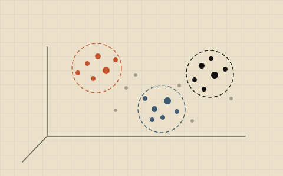
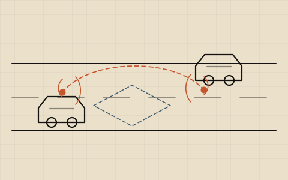

W-01
Agentic · tool-use
An AI receptionist that books jobs
Lead-response agent · local service businesses
Answers an inbound lead in seconds, qualifies them, and books the appointment — through real tools, not scripted replies: get_availability, save_lead, book_appointment (with double-booking protection) and escalate_to_human. Everything business-specific lives in one JSON config, so re-skinning it to a new client takes minutes, and a deterministic replay mode reproduces any conversation exactly for demos and regression tests.
Python · Claude API · tool-use · multi-tenant
Private · demo on request
W-02
Multi-agent · finance
An AI analyst for financial news
Agentic News System
A planner breaks a macro question into research tasks, tool-using agents gather evidence from news, filings and market data, and a critic agent argues the other side before anything reaches a human analyst. The critic is the point — it turns a plausible narrative into one that has survived an attack.
Python · LangGraph · Azure OpenAI · MCP
Private · walkthrough on request
W-03
Multi-agent · RAG
AI that drafts research papers
Research AI
Five specialists co-write a paper section by section: a Logic Architect structures the argument, a Research Scout gathers citations, a Scientific Writer drafts against that evidence. Status flips are committed before long agent calls so the UI can stream progress, and the whole plan runs on a background worker. Lab rulebooks let each group enforce its own style.
FastAPI · OpenAI · Angular 17 · SQLAlchemy
Private · demo on request
W-04
Multimodal · RAG · mobile
Car repair diagnosis from a photo
MecAI · for solo mechanics
Photo plus symptoms in, a ranked diagnosis out — for mechanics without a dealership's diagnostic tooling. Behind it, a pipeline scrapes, curates, chunks and embeds domain sources (NHTSA complaints, practitioner forums) with deterministic document IDs, so re-running an upsert is always safe and versioned.
Expo · Hono · Cloud Run · Firestore · Azure OpenAI
Private · demo on request
W-05
Vertical agents · GTM
Five AI agents for real-estate brokers
RealAI · Québec market
Not a chatbot bolted onto a brokerage — five agents that each own one job: off-portal prospecting, speed-to-lead voice response, listing content, Bill 96 French-language compliance, and expired-listing recapture. Bilingual FR/EN by construction, because in Québec that's a regulation, not a feature.
Next.js · agent workflows · voice · FR/EN
Private · demo on request
W-06
Data for agents · platform
Make company data usable by AI agents
Datalith
Built on the biggest reason agent programs stall: the data isn't ready. Datalith maps a whole data estate into one knowledge graph, scores it with an Agent-Readiness Score, serves it through a governed MCP gateway with per-agent identity and full audit, then mines the graph for the agentic workflows that data makes possible — each with ROI attached.
Knowledge graph · MCP · governance · strategy
Private · deck on request

W-07
Embeddings · 3D · public
IEEE Vis Explorer
A decade of research you can fly through. Harvest from OpenAlex, embed every abstract with text-embedding-3-large, project 3 072 dimensions down to three with UMAP, cluster with HDBSCAN, then label each cluster with c-TF-IDF keywords refined by an LLM. Colour by topic or citation impact, filter by journal, search in real time.
W-08
Geospatial AI · digital twin
Satellites that predict power outages
Sat Lab · vegetation intelligence
Satellite imagery plus AI to predict where trees will bring down a power line, route the trim crews, and assess post-storm damage — then render the predictions inside a live digital twin of the network. Four PRDs and an MVP split into a twin core service, a vegetation service and a shared contracts package.
Python · PostGIS · geospatial ML · CesiumJS
Private · PRDs on request
W-09
Generative AI · 6G
Realistic 6G network data, generated
Generative V2X traffic
Give it a street scene and a mobility pattern and it synthesises plausible time-varying radio traces that would be expensive — or impossible — to collect for real. Built as a stress-test harness, so perception and resource-management policies can be judged against conditions the dataset never contained.
PyTorch · Diffusion · SUMO · Ray Tracing
Private · walkthrough on request
W-10
Reasoning agents · eval discipline
AI that solves visual puzzles
ARC Prize 2026
Three competition entries, and my favourite example of discipline around agents. Kaggle runs fully offline, so the workspace is split into packages the solver cannot escape — submissions depend only on an offline-safe core and can never import the hosted-API tooling. That boundary isn't a convention; a test fails the build if anyone crosses it.
Python · uv workspace · offline-safe packaging
Private · walkthrough on request

W-11
Research flagship · public
MVX · multimodal V2X co-simulation
To my knowledge the first configurable, scalable co-simulation framework marrying a physics-based world simulator with a differentiable ray-traced wireless simulator. MVX generates multi-agent, multimodal datasets — camera, LiDAR, radar, channel — for AI-driven digital twins in vehicular communications. It's the backbone of most of my Ph.D. experiments.